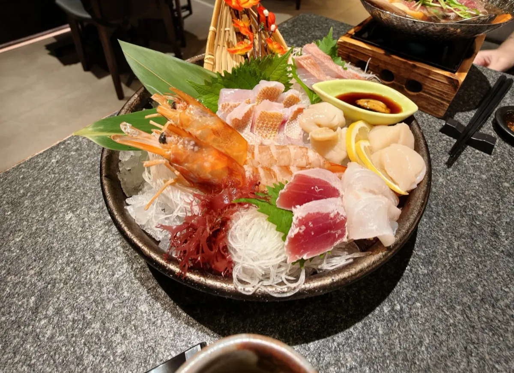
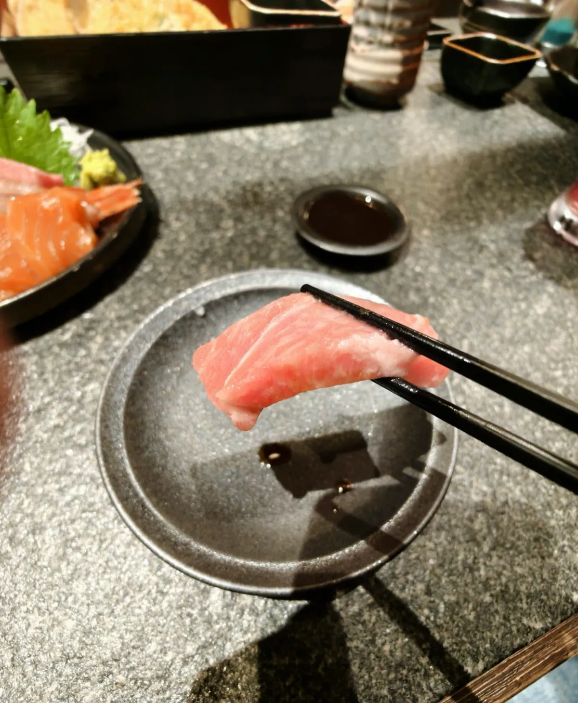
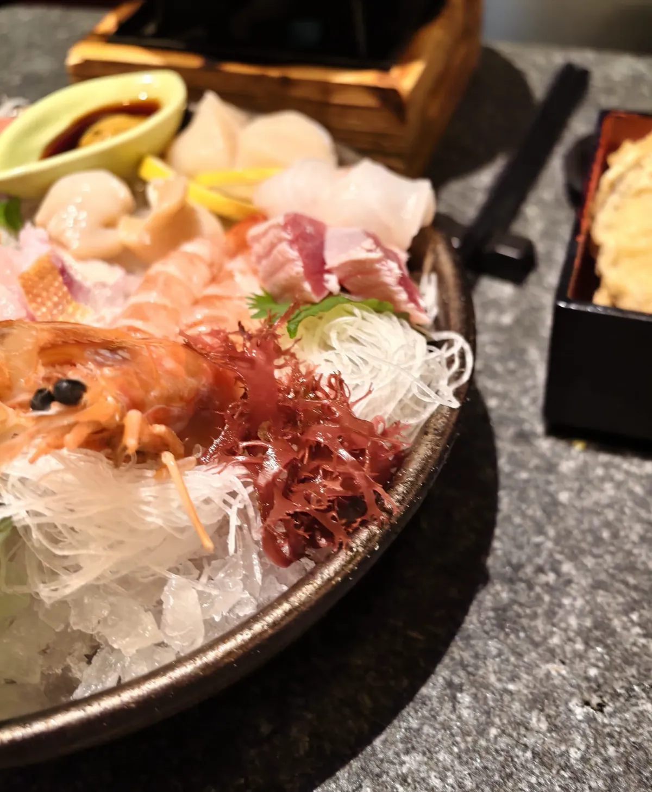
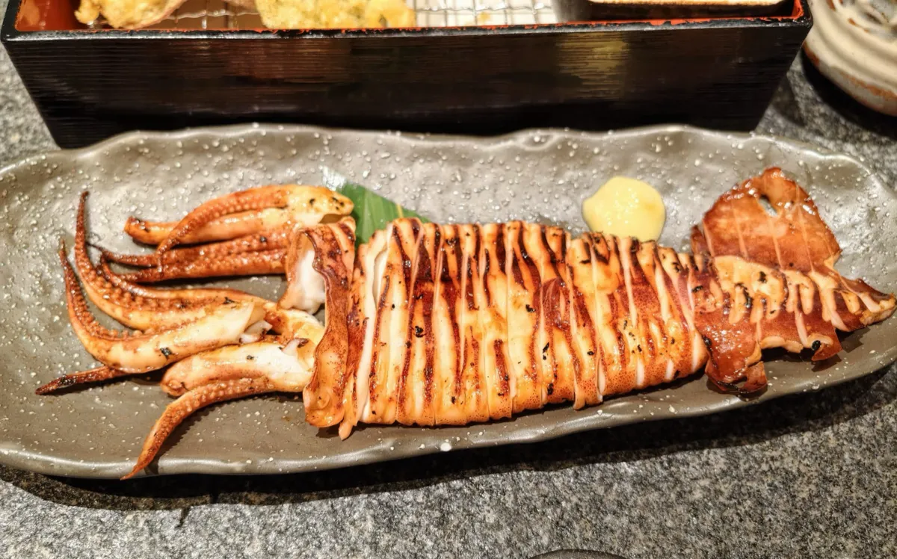

千両（德福廣場1期店）：兩個人約一千港元，刺身拼盤同烤魷魚
九龍灣德福廣場1期一間日式店，英文名 sen-ryo。2026-09-24 晚市去，兩個人，自費，唔係平台招待。一句總結：刺身拼盤份量足，甜蝦同厚切魚生都新鮮，烤魷魚有焦香；大約一千港元兩個人，喺商場食一頓晚餐，食得安樂，會再去。呢個一千係大約數，冇收據逐項，所以下面唔拆單價。
食咗咩，同幾多錢
當日紀錄
到訪日期：
點咗咩（兩個人）：
最終埋單：
營業時間：
地址：
價錢同營業狀況會變，所以抽咗出嚟獨立標明核實月份 —— 實食紀錄呢個分區嘅硬規則之一。正文只寫呢一餐見到咩。
本站之前幾篇有單就逐項對數。呢篇對唔到：手上冇逐項收據，只有兩個人大約一千港元。冇單價就唔砌數，同コメダ珈琲店嗰篇一樣——冇記低嘅數，唔准用平台數字頂替。今次平台頁亦冇見到人均。
刺身拼盤

拼盤份量足，兩個人食落好飽。甜蝦肉軟、帶甜；厚切魚生油脂多，入口會化。碗入面仲有扇貝同幾塊白身，相入面睇到，口述冇逐塊改名，所以呢度唔代佢改。


烤魷魚

火候啱。表面有焦香，肉唔柴，咬落有彈性。黃醬只係陪襯，魷魚本身已經有味。
相入面黑盒有炸物。口述冇講呢樣係咪呢一餐叫嘅，所以唔計入點咗咩。見到先提一句，避免有人以為本站漏寫一味。
和牛鍋
和牛有肉香，湯底鮮、帶甜。拼盤相右邊木座上嗰鍋就係佢，今次冇獨立近鏡。生冷刺身之後嚟一鍋熱湯，兩個人分好自然。
香港呢餐係咩水平
呢餐就喺香港，九龍灣德福廣場1期1樓，唔使過關。兩個人大約一千港元，食到一盤刺身、一條烤魷魚、一個和牛鍋。喺商場日式店，呢個價係一頓晚餐，唔係午市定食，亦唔係廚師發辦。
同本站大阪元祿壽司唔好直接比邊餐抵。嗰篇係按碟計價嘅握壽司，呢篇係拼盤加大件；一個喺心斎橋，一個喺九龍灣。匯率冇記低，所以唔換算。
本分區之前嘅食肆紀錄都喺深圳、廣州或者大阪。呢篇係第一篇香港食肆，之後北上嗰啲文如果要一把香港嘅尺，可以指返嚟呢一餐：商場入面、兩個人、大約一千港元、有刺身拼盤。
平台數據同本站判斷
平台數據（大眾點評，2026-10-07 截取，唔係本站評分）
評分：
本站判斷
判斷：
五條評價係一個好細嘅樣本。4.2 分係平台統計，唔係本站分數。本站自己嘅部分只係：呢一餐食材新鮮、拼盤夠兩個人飽、烤魷魚有焦香，大約一千港元食得安樂，會再去。
環境舒適係到訪當日嘅感覺，一次樣本，唔代表每個時段都一樣。截取當日平台頁冇列出營業時間同電話，出發前自己再確認。
本分區其餘嘅實食紀錄一樣係咁寫：一次到訪、一個日期、一組會過期嘅數。
常見問題
千両德福廣場喺邊？
九龍灣偉業街33號德福廣場1期1樓F27號舖。英文名 sen-ryo。呢個地址係大眾點評 2026-10-07 嘅商戶頁，唔係本站量度過嘅路線。
兩個人食咗幾多錢？
大約一千港元，自費。呢個係大約數，冇逐項收據，所以呢篇唔拆刺身、烤魷魚、和牛鍋各自幾多。
千両德福店食咗咩？
兩個人：刺身拼盤、烤魷魚、和牛鍋。拼盤入面見到甜蝦、厚切魚生、扇貝同白身。烤魷魚相入面黑盒有炸物，口述冇確認係咪呢一餐叫嘅，所以唔計入。
大眾點評幾多分？
2026-10-07 截取係 4.2 分、5 條評價，口味、環境、服務都係 4.2。呢個係平台統計，五條評價樣本好細，亦唔係本站評分。
千両德福店幾點開？
截取當日個商戶頁冇列出營業時間同電話。本站唔會補一個冇見到嘅時間，去之前自己再確認。